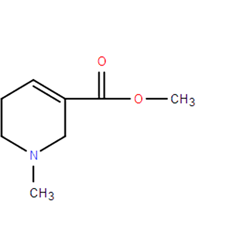

槟榔简介
槟榔，别名傧郎、宾门、螺果，是单子叶植物纲中的一种常绿乔木。槟榔树的高度超过10米，最高可达30米。槟榔原产于马来西亚，主要分布在亚洲的斯里兰卡、泰国和印度，中国的槟榔树主要分布在云南、海南等热带地区。在亚洲地区，槟榔常被用来嚼食。台湾、湖南和一些东南亚国家的人们常将槟榔用老叶包裹，剖开后加入生石灰嚼食。
槟榔中含有生物碱，其中主要的作用成分是花青素和槟榔碱。槟榔中的花青素具有抗老化自由基的作用，并已被证实有抗抑郁，产生快乐情绪的作用，这给槟榔带来了一定的成瘾性。人在嚼食槟榔过后，会面部发红，情绪兴奋，如同喝醉酒一般。宋代诗人苏轼在《食槟榔》中详细描述了槟榔的味道，并做出了“滋味绝媚妩”的评价。明朝的刘伯温在《初食槟榔》中，描述嚼食槟榔的感受为“清凉彻肺腑”。

槟榔碱是什么
槟榔碱是一种有机物，化学式为C8H13NO2，性质为油状液体。槟榔碱氢溴酸盐酸盐是无色晶体，味苦，溶于水和乙醇。 槟榔碱在医疗上用于治疗青光眼，能使绦虫瘫痪，所以也用作驱绦虫药。临床用于治疗产后子宫出血、子宫复旧不良、月经过多等。
从成分性质上看，与尼古丁一样，槟榔碱也是一种生物碱，它具有遗传毒性。可在人的原代和培养细胞中诱导DNA链断裂、形成微核（异常结构，是染色体畸变的一种现象）、染色体畸变和姐妹染色单体交换。除此之外，槟榔碱的代谢产物槟榔次碱（arecaidine）和槟榔碱-N-氧化物也具有遗传毒性。
槟榔具有极强的成瘾性。在一篇名为《Areca nut chewing and dependence syndrome: Is the dependence comparable to smoking ? A cross sectional study》的论文中，作者对槟榔嚼食者进行了调查研究，发现槟榔的成瘾率高达67.2%，作为参考，吸烟的成瘾仅仅只有49.7%，酒精成瘾率只有4%-7%。
数据来源：《槟榔的本草考证、化学成分及药理作用研究进展》
不止成瘾性强，槟榔成瘾之后的危害性也令人震惊。2003年，国际癌症研究机构根据已有的调查研究证据，将槟榔列入了第一类致癌物的分类，也就是说，即使没有任何的添加剂，嚼食槟榔也会致癌。除了致癌，嚼食槟榔还会导致口腔黏膜纤维化等众多口腔疾病。《三亚市居民食用槟榔与口腔疾病发病情况》中的调查显示，长期嚼食槟榔居民口腔粘膜纤维化的发病几率是30%，相比之下，普通居民的发病率为0。
数据来源：《三亚市居民食用槟榔及相关口腔疾病的流行状况调查》
口腔黏膜纤维化是长期嚼食槟榔的人群最容易患上的口腔疾病，它可以在口腔的任何位置发生。一旦发病，口腔中固有层就会发生纤维组织变性和上皮萎缩，从而导致粘膜硬化，患者牙关紧闭，影响咀嚼等口腔正常功能。研究显示，咀嚼槟榔的时间越长，口腔黏膜纤维化的发病几率就越高。嚼食20年患上口腔纤维化的概率是嚼食1年的64.91倍。
数据来源：《嚼槟榔与口腔黏膜下纤维化癌变之间的关系》
口腔黏膜纤维化是口腔癌的第一大诱因。口腔黏膜纤维化发病率提高，口腔癌发病率也自然上升，这正是长期咀嚼槟榔的居民口腔癌发病率是普通居民7倍的原因。
尚不健全的法规
2020年，最新修订的《食品生产许可分类目录》删除了原有的“食用槟榔”的类别，意味着在我国槟榔已经不在食品生产许可分类目录中，槟榔食品的生产许可从此没有了法律依据。但我国法律对于槟榔到底属于食品还是药品、贩卖合法还是非法并没有明确的法律规定。
除此之外，我国各地政府对于槟榔的法律和监管制度也并不统一。早在1996年9月，厦门市人民政府便颁布了《厦门市禁止生产、销售和食用槟榔规定》，全面禁止槟榔生产加工。2022年9月13日，四川省南充市发布通知要求食品经营者全面下架并不得销售槟榔食品。9月15日，义务市市场监督管理局称“浙江省内的食品经营者不得销售食品包装和标签标识的槟榔制品。”虽然某些地方政府已经开始着手禁止槟榔，但大部分地区对于槟榔的态度依旧不明确，也没有出台相关规定。
不仅在我国，世界上其他国家对于槟榔的法律规范也并不统一，新加坡、澳大利亚、土耳其等国家将槟榔视为毒品，严格限制槟榔的生产销售和食用，2021年8月就有中国公民因携带槟榔入境土耳其而被捕。但除了少部分国家对于槟榔有严格限制，其余大部分国家并没有明确的法律规定，槟榔依旧处于法律和监管的灰色地带。
产业的背后
为什么槟榔的危害人人皆知，但却依旧禁不了，灭不掉？事实上，槟榔产业的背后有着巨大的经济利益，关系到海南省大半农民的生存。根据《中国市场监管报》的报道，2011年到2018年，中国槟榔产业的产值从588亿元上涨到了781亿元人民币，并且依旧呈上涨趋势。根据湖南省槟榔协会的统计，湖南省槟榔产业在全国的销售网点已经超过了200万个，全省从事槟榔生产、销售的人员约200万人，全国超过500万人。2020年10月，《海南日报》的一组数据显示，截至2019年底，海南省槟榔种植面积达到了187万亩，海南省种植槟榔的农民有230万人，占全省农业总人口的41.37%，可以说，槟榔产业成为了湖南和海南数百万从业者的经济命脉。
除了产业规模之大和涉及农民人数之多，企业的税收也是槟榔产业无法被禁止的重要原因。天眼查数据显示，全国名称或经营范围中含有“槟榔”的企业共有43128家，其中大部分企业都分布在湖南省和海南省，数量分别为1.73万家和1.01万家。
在这些企业中，口味王规模最大，营业额最高。2020年，口味王的年营业收入达到了36.76亿元，并以纳税1.16亿元的华丽数据被评选为“资阳区2020年纳税大户”。2021年，口味王更是以42.35亿元的营业收入上榜该年度湖南省百强企业。2021年，湖南省槟榔产业的规模已经超过400亿元，年上交税收超过8亿元。槟榔产业牵涉数百万人的生存，数亿元的财政收入，想要禁止槟榔自然也就困难重重。
槟榔文化的起源
亚洲的许多国家和地区都有嚼食槟榔的传统习俗，例如湖南、海南、台湾、马来西亚等。
古代的中国南部地区就有服用槟榔来御寒祛湿的传统，对于槟榔的记载最早可以追溯到东汉时期的《异物志》。
槟榔，若笋竹生竿，种之精硬，引茎直上，不生枝叶，其状若柱。其颠近上未五六尺间，洪洪肿起，若瘣木焉。因坼裂，出若黍穗，无花而为实，大如桃李。
——东汉杨孚《异物志》
古代槟榔文化的中心是中国的台湾省。在台湾原住民社会中，槟榔有夫妻相亲相爱的象征意味。同时，槟榔还是款待客人的重要食物，就如同汉人以茶待友，一般被用作送礼和情人信物。在台湾卑南族的习俗中，槟榔还是一种重要的祭祀和巫术用品。在祭祀过程中，槟榔被视为人的化身，槟榔整体被看做人的身体，而槟榔的蒂则被看做人的头部。在每年一次的祭祀仪式中，祭师们会将一种草横置于路上，象征凡界与圣界的划分，再用去蒂的槟榔作为祭品，告慰当年过世的亡灵。
湖南则是现代槟榔文化最为盛行的地区。湖南省槟榔协会甚至打出了“槟榔在口，精神抖擞”的标语，湖南也是全国槟榔生产和消费最多的地区。在湖南省槟榔食品行业协会的网站上，介绍了槟榔止咳祛痰、消食醒酒的养生妙用，还用 “一口槟榔一口茶”概括了槟榔在湖南人民心中的地位。

传统槟榔文化
披上“养生”外衣的槟榔
随着互联网的不断发展和人们科学知识的日渐丰富，槟榔的危害正在逐渐被大众所熟知。然而，为了防止自己的口碑因此受到影响，许多槟榔生产商试图给自己的槟榔产品打上“健康”和“养生”的标签。
槟榔生产商问道食品曾在自己的社交媒体上发布文章《打造健康槟榔，为消费者带来一份安定》。文章中宣称自家槟榔制作优良，能够“有效保护口腔，减少咀嚼槟榔带来的伤害”。某电商平台上，一款名为“水槟榔战斗力口香糖”的产品介绍中标注了“无粗硬纤维，不伤口腔”的广告语。许多槟榔厂商还开始推出“养生槟榔”，试图通过在槟榔中加入枸杞、桂花油、木糖醇等养生食品来赋予槟榔健康价值。除此之外，近年来市面上还出现了一种名为“茶硒槟榔”的产品，厂家声称茶硒有助于修复口腔溃疡，从而降低口腔癌的发病率。
致癌杀手摇身一变成为了养生利器，含有致癌物的槟榔穿上了写着“养生”两个大字的外衣，属实是掩耳盗铃。好在大部分的消费者对槟榔危害的认识并没有因为厂商的宣传而扭转。从百度搜索指数上看，与槟榔相关的搜索词条大多还是负面、有害的。大部分网民都能够认识到，只要是槟榔制品，其中就一定含有槟榔碱。只要槟榔碱不被去除，槟榔对健康的危害就永远不会消除。
当槟榔成为一种潮流文化
除了宣称自己的产品健康无害，一些槟榔厂商还把目光锁定在了青少年身上，试图将嚼食槟榔打造成一种流行文化。某些厂商仿照“爆珠香烟”的概念，打造出了“爆珠槟榔”。爆珠槟榔在传统的槟榔中注入了一颗爆珠，当消费者在嚼食槟榔时，先吃到槟榔的外壳，再咬碎爆珠，珠内的液体流出，使槟榔的口感变得更加丰富、劲道。为了吸引年轻人的注意力，厂商们还对槟榔进行了包装升级。在包装颜色上更多选用橙色、蓝色灯充满活力的亮色，并在包装上打上“潮人”等字眼。

年轻化、多彩化的包装
为了进入年轻人的视线，槟榔厂商们还不惜花重金在年轻人喜爱的综艺节目和电竞比赛中投放广告。2020年10月，口味王槟榔官宣冠名网络篮球综艺《这就是灌篮》第三季。第二年8月，口味王又成为了《这就是街舞》第四季的战略合作伙伴并在节目中宣传自己的产品。"槟榔+综艺"的模式正是为了让槟榔入侵年轻人的心，最后侵入他们的嘴。
结语
一首流行在台湾原住民社会中的阿美族歌谣《书包里的秘密》概括了台湾人民对槟榔的情感。在原住民社会中，槟榔是族人传达人际情感、沟通文化脉络的重要植物，是原住民祖先流传下来的智慧结晶，神圣不可侵犯。嚼食槟榔给人们带来了身体上的温暖和精神上的欢乐。
una si alufu 是誰在背書包
una si alufu 是誰在背書包
o matua’ say 那個老人
o maan sa paro ira 裡面裝些什麼
ku ic’ p ato tamaku 檳榔和香煙
o sa pimaan 用來做什麼用
o sal oraol 用來當刷子
o walis no matua’say 刷那個老人的牙齒
槟榔文化是美好且温暖的。但科学研究已经表明了槟榔对健康的危害。我们衷心希望嚼食槟榔的习俗能够就此停止，让温暖的槟榔文化停留在所有人的美好记忆里。
参考资料
1. 大山.“槟榔”与“群众利益”[N].中国市场监管报,2021-9-23.
2. Mirza SS, Shafique K, Vart P, et al.Areca nut chewing and dependence syndrome:Is the dependence comparable to smoking?A cross sectional study[J].Subs t Abuse Treat Prev Policy, 2011, 6 (1) :1-6.
3. Liu Z, Li YH, Cui ZY, et al. Prevalence of tobacco dependence and associated factors in China: Findings from nationwide China Health Literacy Survey during 2018-19. Lancet Reg Health West Pac. 2022 May 4;24:100464. doi: 10.1016/j.lanwpc.2022.100464. PMID: 35538934; PMCID: PMC9079698.
4. Huang M C, Chen C C. Alcohol dependence in Taiwan: from epidemiology to biomedicine[J]. Journal of Experimental & Clinical Medicine, 2012, 4(2): 108-112.
5. 中研普华产业研究院《2021-2026年槟榔行业深度分析及投资价值研究咨询报告》
6. 沈延生.湘潭槟榔行业的文化建构与资本转换[J].文化遗产,2020(3):91-98.
7. 银昕.围堵槟榔 千亿规模产业将何去何从[J].法人,2022(10):67-69.
8. 郭霁瑶.已被某些国家认定为“毒品” 槟榔还能嚼吗? 小众嗜好背后暗藏巨大市场[J].《中国经济周刊》,2021(16):92-94.
9. 湖南省槟榔协会官网